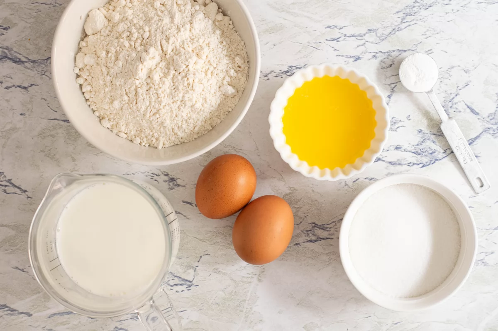
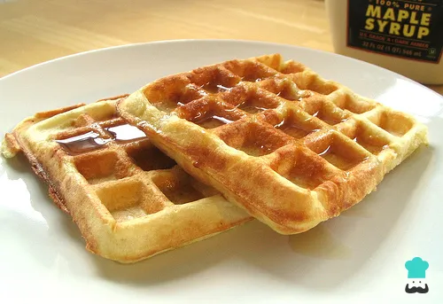

¡Vamos a preparar Waffles!
Los waffles son una delicia crocante por fuera y esponjosa por dentro. Ideales para un desayuno de fin de semana o una merienda especial. Se pueden acompañar con frutas, miel, dulce de leche, crema o lo que más te guste. ¡Una receta fácil y tentadora que no falla!
🛒 Ingredientes
- 2 huevos
- 2 tazas de harina
- 1 ¾ taza de leche
- 100 g de mantecaderretida
- 3 cucharaditas de polvo de hornear
- ½ cucharadita de sal
- 1 cucharadita de esencia de vainilla (opcional)
📸 Así se ven los ingredientes

👨🍳 Paso a paso
- Batir los huevos en un bol grande hasta que queden espumosos.
- Agregar la leche, la manteca y la esencia de vainilla. Batir por 1 minuto.
- Incorporar la harina, el polvo de hornear y la sal. Batir hasta obtener una mezcla homogénea.
- Precalentar la waflera y engrasarla un poco si es necesario.
- Verter la mezcla en la waflera caliente (sin llenarla demasiado).
- Cocinar hasta que estén doraditos y crocantes.
- Servir calientes con lo que más te guste. ¡A disfrutar!
📸 ¿Cómo se ven?

📂 Receta en GitHub
Podés clonar el repo desde acá: https://github.com/ejemplo/receta-waffles
Fuente: Receta adaptada de RecetasGratis.net